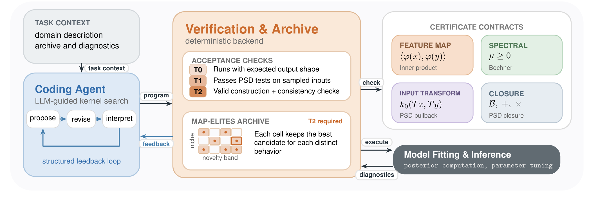
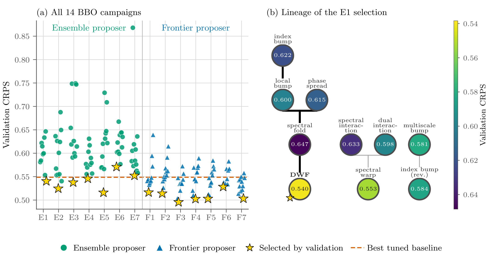
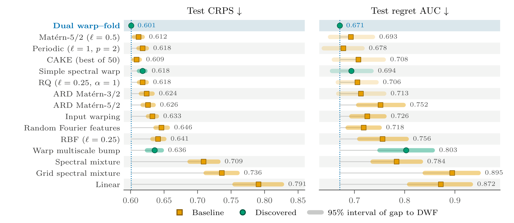
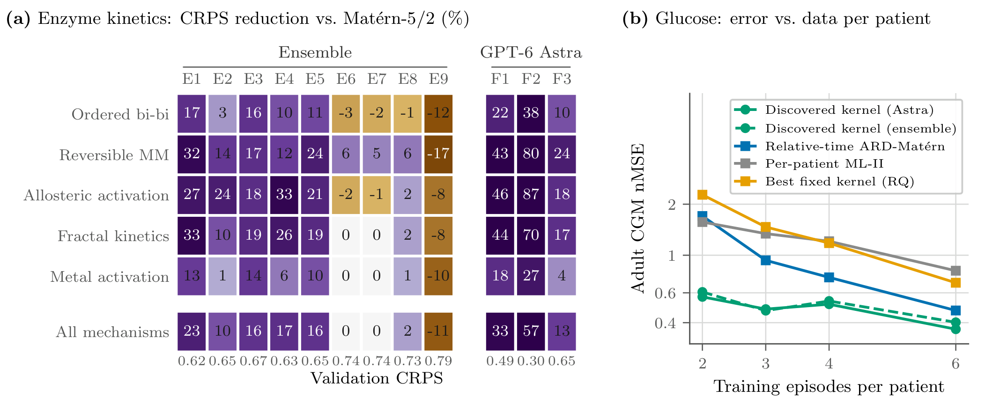
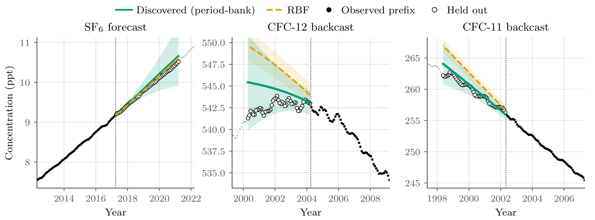
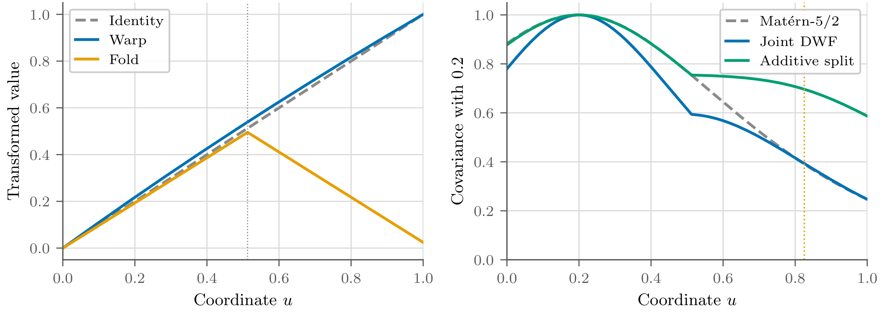

KERNAUT：让编程智能体发现有效、可复用、可解释的核函数
论文原文 ↗Richard Cornelius Suwandi、Feng Yin、Kevin Murphy，Kernel Autoresearch for Open-Ended Model Discovery，arXiv，2026。论文页面 ·
用少量酶反应测量预测新条件下的速率，高斯过程需要先知道哪些条件应当产生相近结果。这种相似性由核函数规定，也是模型的归纳偏置。自动核设计通常组合已有核：构造合法，但表达能力受积木库限制；让语言模型任意写程序又容易产生不合法协方差。KERNAUT 将核设计变成开放式程序发现：智能体编写新组件，由固定构造规则组装有效核，再通过多样性搜索发现可以迁移的函数结构。
方法怎么做：自由编写组件，用构造规则保证有效核
高斯过程把未知函数值作为一组相关变量，核函数计算它们的协方差。合法协方差矩阵需要正半定，即任何函数值线性组合的方差非负。本文的压力测试发现，22%–58% 在随机输入数值检查中通过的自由核程序，换尺度或维度后会失效。作者因此把搜索自由度放到能够保持核合法性的接口中。
智能体可以把输入变成特征后取内积，可以提出频率和非负权重来组装正弦余弦特征，也可以先变换输入坐标再调用标准核；已有核的合法组合仍被保留。后台解释器按这些构造契约组装核，并检查组件的数值和逐点一致性。智能体由此能够创造新的相似性结构，而接受的程序仍遵守协方差规则。

原图 1：智能体提出组件程序，后台进行有效构造与评价，再将预测表现反馈给搜索；右侧为可编程的构造接口。
搜索中，一个候选核先在任务上拟合，再取得预测分数和诊断。质量—多样性档案库按核的行为保留表现优良又不同的候选，新颖性筛选引导下一轮探索功能上新的结构。验证任务选定最终核后，其程序结构被保留，用新任务的少量观测拟合输出幅度和噪声，再进行预测。这样评价的是发现出的函数偏好能否复用。

原图 2：左侧展示搜索得到的候选和最终选择，右侧展示一次搜索怎样逐步改变核的结构。
酶动力学任务把程序的物理含义讲得最直观。输入包括底物、抑制剂、共底物和产物浓度、酶用量、温度及 pH，输出是反应速率。搜索任务由十种速率律生成，每个任务给出少量条件—速率数据。选中的 F2 程序先计算米氏饱和、抑制、双底物、底物抑制和 Hill 协同性等响应形状，在多个浓度尺度上求值，并加入局部变化特征；再乘入酶用量、温度和 pH 因子。
这些步骤把一组实验条件变成带有动力学含义的数值特征，两组条件的特征内积给出核值。高斯过程随后利用已有速率测量约束新条件预测。发现出的结构因而体现了“哪些条件在动力学响应上相近”的可读规则。
主要结果：发现结构能够跨任务迁移，也能继续人工改进
**新增构造空间带来了有效的归纳偏置。**在相同智能体和搜索预算下，完整接口相对只能组合已有核的配置，赢得 12 次配对搜索中的 11 次，测试 CRPS 约低 8%。CRPS 同时评价预测分布的位置与宽度，越低表示预测分布更贴近观测。
黑箱任务选出的代表结构是双重形变核 DWF：它将每个输入坐标分成轻微单调变换和三角折叠两个分支，再在拼接坐标上计算 Matérn 核。单调分支保留原有距离，折叠分支让镜像位置更相似，形成近似反射对称的函数偏好。在 60 个新黑箱任务上，DWF 的预测 CRPS 为 0.601，固定 Matérn 为 0.612；在相同元训练样本下，它也优于元学习深核 FSBO。进入贝叶斯优化后，其平均归一化遗憾为 0.671，Matérn 为 0.693。

原图 3：左侧为预测分布 CRPS，右侧为优化遗憾，均越低越好；发现的核与固定核及自动核方法在相同测试任务上比较。
**酶核能够迁移到未见速率机制。**作者用五种新机制构成 75 个任务，包括有序双底物、可逆米氏、变构激活、分形动力学和金属激活。冻结的 F2 核取得 CRPS 0.312，调优 ARD 核为 0.567，深核为 0.581；F2 在 73 个任务上优于 ARD。它把搜索时学到的动力学响应结构，用于少量新观测下的机制变化。

原图 5：左侧比较不同酶核在五类新机制上的预测改善，右侧展示独立发现的血糖核怎样利用不同数量的患者轨迹。
其他任务展示了同一搜索方式的表达灵活性。温室气体核在平滑项上加入常数与低频正弦特征，以表达缓慢变化的趋势；从 CO₂、CH₄、N₂O 记录中发现结构，再用于 SF₆ 和 CFC 记录的外推。血糖核则在虚拟患者的进餐、胰岛素干预和短段观测中提取响应规律，用于新患者预测。

原图 4：实心点为已观测记录，空心点为保留区间；SF₆ 展示向未来预测，CFC 展示向过去外推，曲线和区间反映核对不同趋势形状的表达。
**程序可解释性还能转化为新的改进。**研究者读懂 DWF 的双分支后，将“拼接后计算一个核”改为“两分支分别计算核再相加”，使两个相似性来源可以分别发挥作用。人工修改后的保留测试预测误差进一步下降 5.7%，优化遗憾下降 7.8%。这一结果把自动发现与人类结构理解接成了可执行的协作。

原图 13：左侧显示单调与折叠分支，右侧比较原核和人工相加版本的协方差形状，说明修改怎样改变镜像位置的关联。
领域贡献：把模型发现的结果变成可读数学程序
KERNAUT 将有效性构造、开放式编程和质量—多样性搜索结合，让自动核设计超出固定积木组合。输出是一段可独立复用的核程序，既能在少量新观测上表达适合任务的函数规律，也能被研究者理解和继续改造。酶动力学与黑箱任务的迁移结果说明，智能体可以发现新的建模偏好，而不只为每个任务重新调一组参数。
附：完整原始摘要中文翻译
核函数编码了广泛机器学习模型的归纳偏置，但自动核设计面临一个根本性的两难。由基础核与算子组成的固定语法能够保证有效性，却把搜索限制在这些构件所能表达的结构之内。相反，不受限制的程序消除了这一限制，却不再保证有效性。在我们的压力测试中，22%–58% 已通过随机输入数值检查的语言模型生成核，在不同尺度或维度上评估时失效。
我们提出 Kernel Autoresearch（KERNAUT），将核设计视为开放式模型发现。编程智能体把核写成程序，而构造契约确保每个被接受的核都有效。一个兼顾质量与多样性的档案库保留表现优良且行为不同的核，新颖性筛选则引导智能体提出功能上新的候选。我们的实验表明，发现的核编码了可复用的归纳偏置，能够泛化到未见过的任务。在保留的黑箱优化函数族上，一个发现的核优于在相同任务样本上训练的元学习深核。此外，从十种酶动力学速率律中发现的核，在五种未见机制上取得了比调优后的 ARD 和深核基线更低的误差。这些发现的核也是人类研究者能够改进的可解释程序：其中一个核经人工改进后，保留测试中的预测误差进一步下降 5.7%，优化遗憾下降 7.8%。